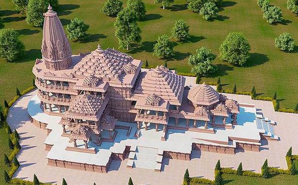
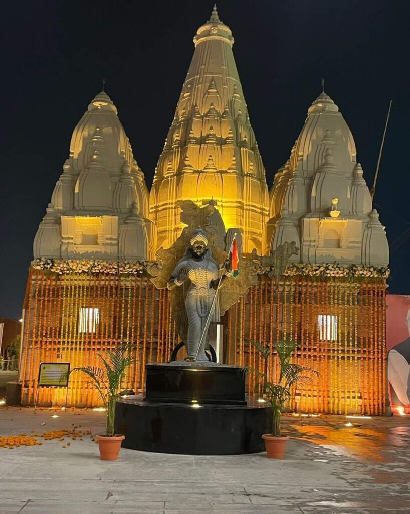
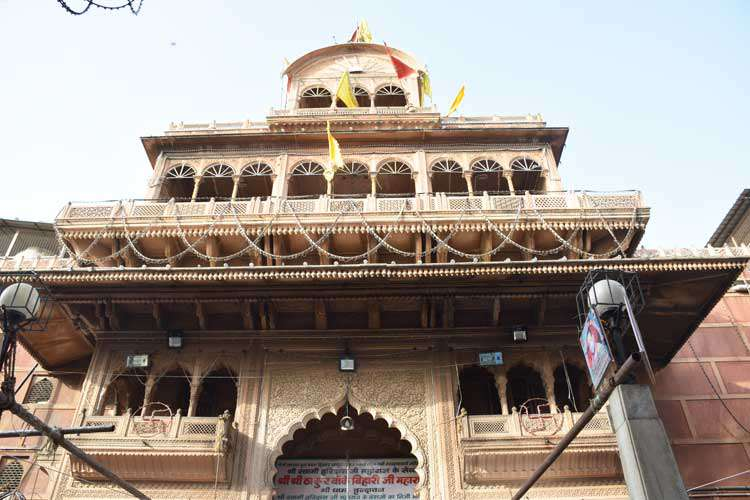

Ayodhya has been in existence from the very beginning of the human race and is it is believed that it was the center of the activities of the gods that were present on the earth many thousands of years ago. Lord Rama, the seventh incarnation of Lord Vishnu was been here and he ruled His kingdom from this town. It is also believed that this city was built by the gods and was known as Kosaldesa in the ancient times. The Janmabhoomi is the place where Lord Rama took birth and there is a small temple at this location that is dedicated to Lord Rama. It is of great religious value to the Hindus and the Vaishnavites. Click here to know more
Kashi Vishwanath Temple is one of the most famous and sacred temples in the heart of the oldest surviving city in the world, Varanasi.It is thronged by thousands of visitors, especially the foreigners to catch the glimpse of the temple. The Jyotirlings of Lord Shiva, Vishwanath of Visheshwara are enshrined in the temple. It is believed that Varanasi is the place from where the first Jyotirlinga flared towards the heaven after breaking from the earth’s crust. Devotees are of the opinion that one who worships Lord Vishwanath attains happiness, all his desires and ultimately liberation. Click here to know more
Banke Bihari Temple is one of the most significant temples in the whole of India.From the year 1864, when the temple was built, Banke Bihari is being worshipped here only.There are no bells in the temple. Only once in a year, Mangala Arati is performed and that is the day after Janmashtami. Click here to know more
